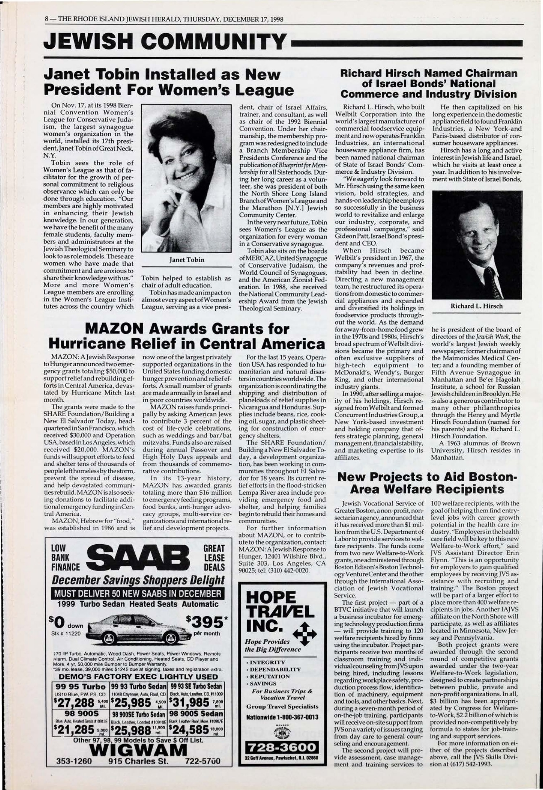
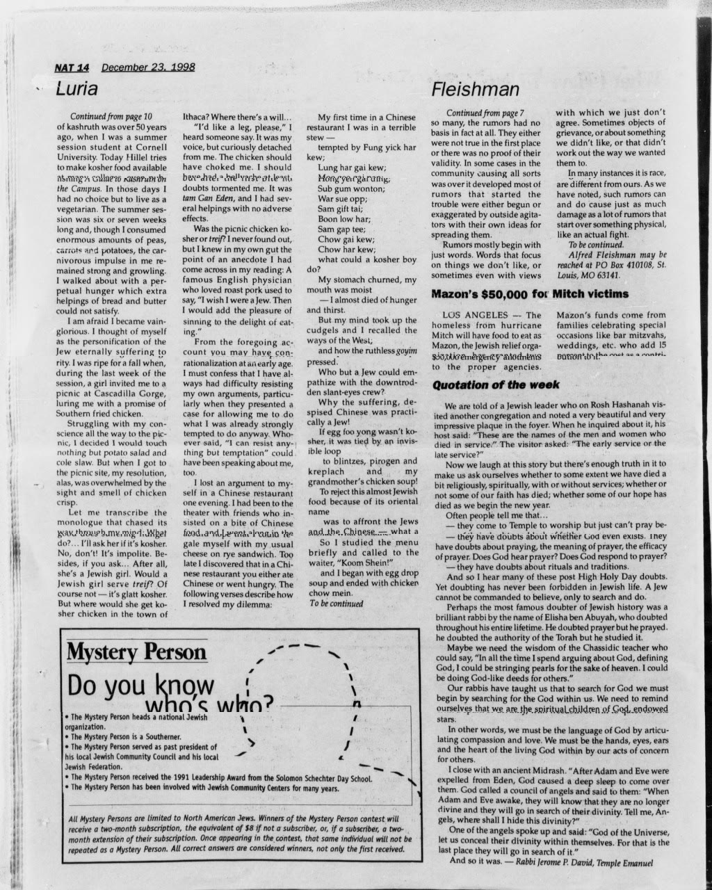
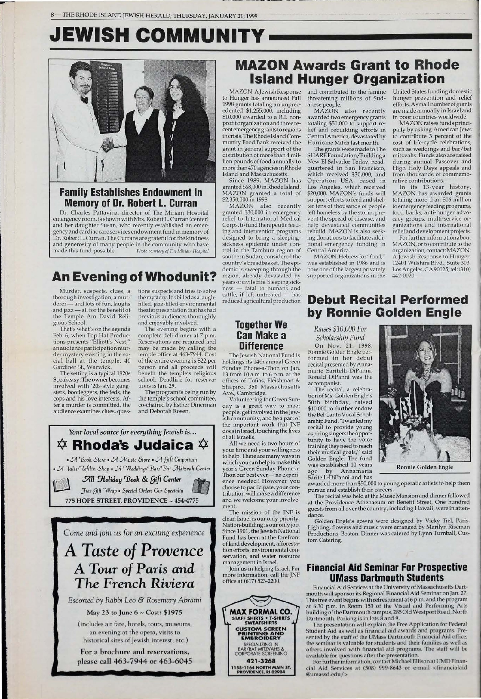

HN-841 · December 23, 1998 · Civil Rights & Social Change > Poverty, Inequality & Humanitarian Issues > Relief and social welfare
Source: Jewish Post, p. 18 — original page.
Report: A notice described Mazon, a Jewish hunger-relief organization, allocating two $50,000 emergency grants for survivors of Hurricane Mitch and discussed giving tied to family celebrations.
Assessment: A reported grant allocation, not independently audited evidence of final transfer, spending, or the total relief funds raised. The November synagogue-loss account and this December aid notice show separate community consequences of one disaster.
Identity-review candidate peers: HN-839:Algorithmic
Authentic images retrieved from Rhode Island Jewish Historical Association, Hoosier State Chronicles (Indiana State Library) and Rhode Island Jewish Historical Association (Rhode Island Jewish Herald). Article crops are located using the archive's own OCR word coordinates and rendered at native crop resolution; article clips are assembled from the archive's own article-block images; page images marked "archive tiles" are stitched from the archive's own tiled page service at its 256-px tile cap; page images marked "issue PDF" are single pages rasterised from the archive's own issue PDF, with the page chosen by matching the headline against the PDF's text layer; page scans are reduced-size access renditions. No images were generated, mocked, or retouched.



Status: Archive images acquired
Authentic archive-owned image renditions were retrieved for this record and are displayed above. The source-acquisition manifest preserves the original pre-acquisition feasibility assessment.
URL (preserved verbatim): https://newspapers.library.in.gov/?a=d&d=JPOST19981223-01.1.18
Saved research report: Historical_Newspaper_Event_Research_828-852_2026-10-23.md
Evidence note: A newspaper report means a historical publication made a claim; it does not establish that claim as fact. Contemporary reporting is separated from later scholarly context and our own assessment.